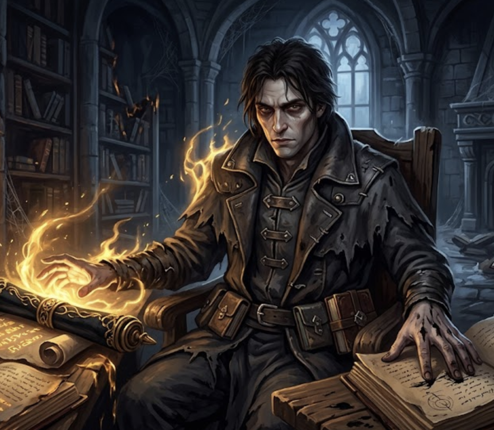
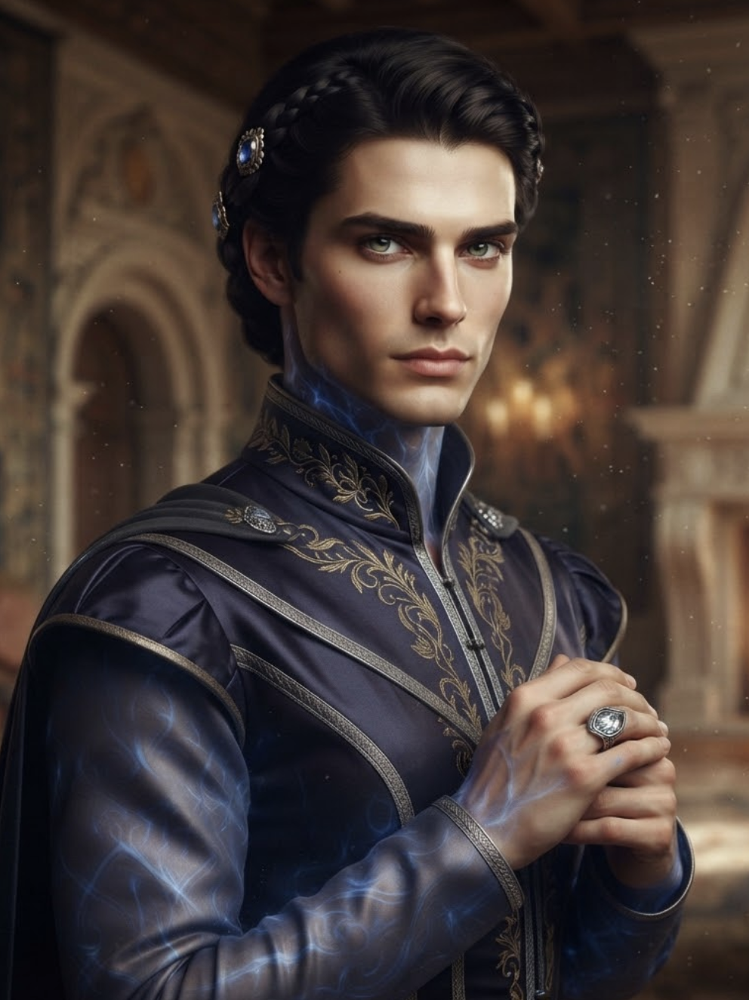
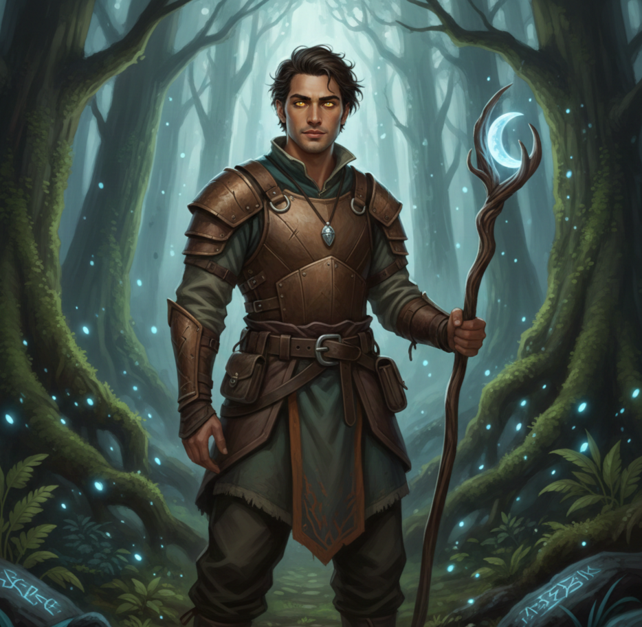

The same name, drawn many different ways. Each card below is a version of Jaqobis I play — a different creed, a different wound, a different reason to be at your table. Pick one up and read the back.



Cursed Scholar — a cataloger who touched the wrong scroll and lost the ability to feel anything at all.
He was a junior academic at the University of Ealune — thorough, careful, invisible. His job was cataloging the restricted collections: books seized from dead mages, artifacts from ruins, research too dangerous to shelve. Then a box labeled Miscellaneous Documents — Historical Interest Only gave up a scroll wrapped in black cloth, and the seal broke under his fingers because it wanted to.
Fire and sunlight wrote themselves into his blood. The cost arrived a heartbeat later: every nerve went cold, and the part of him capable of warmth, love, connection simply shut like a door. He watched the archive burn without feeling the heat. He grabbed a satchel of books and ran, and he has been running for three years.
Now the magic comes easily — fire, sun, and adversarial spellwork that turns other casters' power back on them — but it is volatile, and it erupts when emotion tries to surface in the hollow. He balances it with research, a bow, and distance. He steals books, chases rumors, interrogates dying mages. He calls it research. It is really a search for whether he can ever feel again.
Ink-stained fingers and eyes that catalog you like a book. He doesn't react to pain or temperature the way people expect. It unnerves them.
The first book he stole after Ealune — a primer on elemental theory, margins crowded with desperate theories, wrapped in oilcloth against his own fire.
Research, adapt, survive. Emotions lead to mistakes, mistakes lead to fire, fire leads to death — so he stays clinical. It isn't really living, but it's what he has.
The truth about the scroll, and making sure no one else is cursed by it. He can't feel that it matters. He remembers that it does.
Roll to see what he tells you.
Noble Ward and Political Weapon — taken in at six, trained to cast where no one could see it.
The magic showed at six — a hunting dog that should have died, courtyard flowers blooming out of season. A noble house in the Gulf Nations saw both an asset and a liability and adopted him as a distant relative's orphan, rather than let the draft or a rival take him.
The training ran on two tracks. Publicly: etiquette, swordplay, archery, courtly politics — how to read a ballroom like a battlefield. Privately: the Weave, cast small. No grand gestures. Magic disguised as insight, as persuasion, as uncanny luck. A whispered charm in a negotiation, divination passed off as intuition, wards his family never knew were there.
Then a scandal — corruption, ties to Mirgathrukian warmongering — and rivals who knew he wasn't blood. His family sent him away to keep him from being seized. The eldest son said: you've spent your whole life protecting us; now go find out who you are when you're not our hidden blade. He took the signet ring and left.
Perfect posture, courtly grace — and a wariness in the eyes that doesn't match the polite smile. Always watching for the hidden dagger.
A silver signet ring with his adoptive family's crest. Proof of who raised him, if not of blood. He touches it when he needs the reason he learned to survive both ballrooms and battlefields.
Patience and precision. A blade is only as good as the moment it's drawn — and magic is only as effective as the secret it remains.
The family that chose him. The truth, if it keeps others from being used the way he was. And maybe, someday, someone he chooses to love freely.
Roll to see what he tells you.
Wolfchild Survivor — hidden in a cellar at seven, raised for twelve years by the pack that found him.
Someone in the village reported the child who made crops grow and coaxed fire from cold embers. His parents hid him in the root cellar under a rug and a table and told him not to make a sound. Then they lied to the recruiters, and the recruiters didn't believe them.
He was under the floor when they died. His grief didn't explode outward — it drove down into soil and root and ancient stone, and the earth held him while he kept himself silent. Afterward he ran until he collapsed in a hollow between tree roots, and a scarred gray she-wolf lay down beside him instead of killing him.
Twelve years with the pack taught him magic by instinct rather than instruction — the rhythm of seasons, the language of wind through trees. At nineteen, druids and rangers found him, refined it, and taught him to be human among humans again. Their paths eventually diverged. Now he walks the roads between wilderness and society, looking for a pack he can truly belong to.
How still he can be. No fidgeting, no wasted movement — watching everything like he's tracking it. People say he moves like an animal. They're not wrong.
A frayed leather cord his mother made. The only thing he grabbed before he ran, and he's never taken it off.
Trust your instincts. Watch before you act. The pack survives by patience and by striking only when it must — but survive first, question later.
His pack, wolves or people. Children hunted for what they can't control. The wild places that gave him sanctuary. And maybe, for justice.
Roll to see what he tells you.
Every one of these started as a blank sheet and a few stubborn questions. Here's the shortest path from nothing to someone.
It handles all the complexity and number crunching for you, so you can focus on building an awesome character. A step-by-step form guides you and explains everything along the way — and it plays well with virtual tabletops like Roll20 and Foundry.
If your game is in person — or your DM allows paper sheets online — build straight from the PHB.
Numbers make a build. Answers make a person. Every card on this page came out of a questionnaire like the first one.